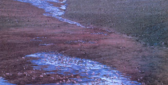
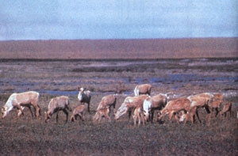
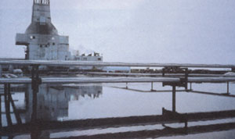
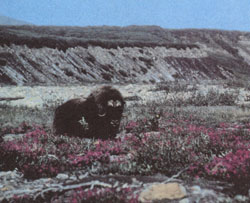
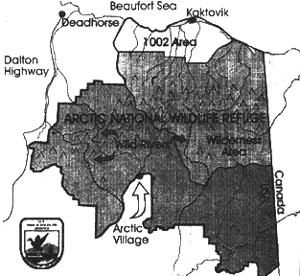
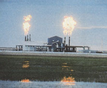

The Last Hunters
Energy and Environment
by Scott Patterson
October/November 1996
A Native American tribe fights Big Oil and Congress.
The Gwich'in Athabascan peoples-a small group of Native Americans whose 15 villages pepper areas along the Canada-Alaska border-are not known for their political activism. But now they are fighting a fierce politcal battle as the very survival of their culture hinges on the outcome of the November elections.
Their newfound political passion concerns a proposal to open the Arctic National Wildlife Refuge in Alaska to oil exploration. Congress passed a resolution to allow drilling in the protected federal reserve as a rider to the 1995 budget, which President Clinton subsequently vetoed. (Republican presidential hopeful Bob Dole is in favor of the drilling proposal.) Clinton has promised to veto any legislation that supports oil drilling in the refuge; however, his veto power may be restricted in a Republican-dominated Congress.
To complicate matters further, the Gwich'in face opposition within the Alaskan community of Native Americans. Both the Inupiat Eskimo and the Alaska Federation of Natives (AFN) are in favor of drilling in the refuge. Opponents of drilling in the refuge claim the Inupiat and the AFN are pawns of the oil cartel.
Caribou People
The Gwich'in are the last surviving native people in North America who live almost entirely by hunting and gathering. Subsisting largely on the Porcupine Caribou Herd, the Gwich'in claim they're fighting Big Oil and Congress to preserve the very essence of their people: Porcupine Caribou. Gwich'in culture centers both materially and spiritually on caribou. "We are caribou people," says Sarah James, spokeswoman for the Gwich'in Steering Committee. "We have a ritual connection with that herd." James believes the Gwich'in will face "cultural genocide" if drilling in the refuge goes forward.
The Porcupine Caribou migrate yearly to the North Slope of Alaska, where caribou cows give birth during the months of May and June. The majority of their birthing grounds lie within the refuge, specifically on the coastal plain. The oil drilling complex would stretch directly across this coastal plain, which has the most promising onshore potential for oil in North America. Most caribou biologists believe the massive industrial equipment that accompanies oil drilling will diminish the Porcupine Caribou's population.
Pamela A. Miller In 1997 there will be a major push in Congress, by both the oil juggernaut and the Alaska congressional delegation, which includes Republican senators Ted Stevens and Frank Murkowski and Congressman Don Young, to open this area for oil prospecting. The Alaska congressional delegation wishes to rename the Arctic National Wildlife Refuge the National Oil Reserve.
Wolves and Bears
The Porcupine Caribou Herd compares to the legendary oceans of buffalo that once thundered across the American plains and the swarms of wildebeest that roam the African Serengeti. Estimates of the Porcupine Caribou population range from 150,000 to 180,000. In April, as spring temperatures begin to melt the snow and ice packs of the frigid arctic winter, the Porcupine Caribou Herd begins a 400-mile migration from the boreal forests of the Yukon to the arctic coastal plain of the northeastern corner of Alaska. There, on the fertile tundra of the refuge, several thousand calves are born. By the end of June all the cows and calves are in the area of the reserve that has come to be known as 1002, the proposed drilling site. There thrives the soft cotton grass that young caribou need to develop. The 1002 area is also relatively safe from the predatory reach of gray wolves, grizzly bears, and golden eagles that live in the Brooks Range to the south. As temperatures rise, mosquitoes begin to plague the herd, which travels north to the shores of the Beaufort Sea, where cool breezes off arctic glaciers protect them from the stinging bites.
The proposed oil wells-and the labyrinth of pipes, roads, and gravel pits that would accompany them-would stretch directly across the Porcupine Caribou calving grounds. Oil developers argue that a management system for the herd could reduce the harmful effects of the industrial hardware. Strategies such as shutting down operations during the calving cycle, they say, will diminish the negative impact of the drilling. Ken Whitten, a caribou biologist for the Alaska Department of Fish and Game, claims any oil installations would disturb the birthing cows. "Because 1002 is a small area, any installation, no matter how well managed, would displace the herd to less advantageous land," says Whitten. "The herd goes to 1002 for a reason. Surrounding areas are more dangerous and less nutritious for the calves.
" A 1995 report prepared by the Department of the Interior condemns any attempt to drill oil in the refuge. "The cumulative effects of reduced access to habitat providing preferred forage, predator avoidance, or insect relief for the herd caused by full development of the area would result in major adverse impact on the herd," the report states. It also disparages the loss of the Arctic National Wildlife Refuge, a "world-class natural area and wilderness." Drilling in the refuge could threaten populations of polar bears, musk oxen, snow geese, and gray wolves, among a variety of other species.
Recent studies of the much smaller Central Arctic Herd, which lives around the Prudhoe Bay oil fields west of the refuge, show that large groups of caribou and pregnant cows avoid cultural intrusions such as pipes and wells. Having to travel around such intrusions lengthens any journey the caribou must make (such as traveling to the coast to avoid mosquitoes), and therefore inhibits their natural behavior. This causes the caribou to lose weight, endangering the lives of younger, less sturdy calves.
Proponents of drilling claim that the Central Arctic Herd population rose after installation of the Prudhoe Bay facilities, proving oil installations don't interfere with caribou. While the population did increase initially, recent studies show a dramatic (nearly 50 percent) drop in the western group of the Central Arctic Herd, which must traverse oil field intrusions as it travels between coast and feeding grounds in the summer. The herd has abandoned its birthing grounds around Prudhoe Bay for more quiet, isolated areas.
Caribou biologists argue that the much larger Porcupine Caribou Herd would encounter more difficulties than the Central Arctic Herd. Because the Porcupine Herd is 10 times bigger, it nearly always travels in large, cumbersome groups. The displacement of the herd's birthing and feeding grounds would most likely be toward the Brooks Range, a mountainous area to the south where predators such as wolves and bears would find easy game in the newborn calves. Some estimates predict that after several years the Porcupine Caribou populations could drop 40 percent or more due to higher predation and forage deprivation.
The drop in the Porcupine Caribou population would profoundly affect the Gwich'in. Their villages are spread out in a remarkable symbiosis with the yearly caribou migration pattern. A lower population would mean the herd would fail to reach hunting perimeters of villages with the consistency and numbers of the past. "Some villages could go years without seeing caribou," says Pam Miller, chairman of the Alaska Coalition. "That would be disastrous for a people whose protein intake is nearly 80 percent from caribou.
" But the question of whether to drill in the refuge does not only affect the Gwich'in. Another people that lives much closer to the refuge than the Gwich'in, the Inupiat Eskimo, is strongly in favor of drilling in 1002. And the Inupiat fear that if the federal government fails to open the refuge, their own livelihood will be in danger.
Divide and Conquer
The largest oil field in the United States is Prudhoe Bay, which supplies 25 percent of the nation's domestic oil supply. Oil from Prudhoe Bay flows via the Alaska Pipeline down to Valdez, where it is transported south in huge tankers. The Inupiat, owners of the Arctic Slope Regional Corporation, have reaped tremendous economic rewards from Prudhoe Bay via tax revenues garnished from corporations such as Exxon and British Petroleum. Kactovic Village, the center of Inupiat oil concerns, is, per capita, the wealthiest region in America, with a median household income of $46,250.
The Inupiat Eskimo face a major fiscal crisis: Prudhoe Bay will inevitably run out of oil. They would profit tremendously from the refuge oil sales, taxes, and jobs, and therefore see the refuge as the answer to a troubling economic forecast. Previous estimates predicted that the Prudhoe wells would go dry by the year 2000. Recent advances in oil extraction techniques, however, such as pumping natural gas into wells to force out additional petroleum, have delivered millions more barrels. Current estimates predict Prudhoe Bay will deliver well into the 2030s. The Inupiat remain strongly in favor of drilling in the refuge despite the extension.
Is this a clash of tribes? Not really, maintains Bob Childers, senior adviser to the Gwich'in Steering Committee. "We're neutral with respect to what the Inupiat do with their own lands," says Childers. The Gwich'in do not oppose the Inupiat's leasing of lands to oil developers, nor do they oppose oil prospecting in general.
The Inupiat, on the other hand, are not united in the campaign to open up 1002. "There are traditional Inupiat that are concerned for our situation and [the Gwich'in's] traditional native ways," says Sarah James. Yet, James asserts, the oil corporation ends up being the political voice of the Inupiat people.
Childers believes oil companies and the Alaska congressional delegation have used the Inupiat's Arctic Slope Regional Corporation for its own agenda. "This is an example of white oil corporations coming in and making a people dependent on their services for money and jobs, and then persuading them to act in ways they normally wouldn't." His statement may come off as an inflammatory conspiracy theory, but in fact the Alaska congressional delegation has prevented the Inupiat from developing oil reserves on their own land by linking Inupiat drilling rights to the opening of the refuge. By doing so, Childers asserts, the oil interests have pitted the Inupiat against the Gwich'in, dividing and weakening native power in Alaska.
The Inupiat feel they are acting on their own behalf. "Prudhoe Bay has transformed an area that was in third world conditions to an area that is like the rest of America," says Alma Upicksoun, a spokeswoman for Arctic Slope Regional Corporation. The Inupiat people are proud of their achievement, having transformed one of the harshest environments in the world into a modern habitat. Critics feel the Inupiat community has overextended itself and is now desperate to generate new oil income to maintain an increasingly fragile infrastructure.
Ironically, the Inupiat oppose offshore oil exploration in the Beaufort Sea. They fear an oil spill could significantly reduce the population of the bowhead whale, the traditional game of the Inupiat Eskimo. But, as Childers points out, the Inupiat's fear of drilling in the Beaufort Sea stems from the risk of accident, while drilling in the refuge could be devastating "even if they do everything right."
Snake Oil While environmentalists claim the Inupiat are under the thumb of Big Oil, the Inupiat claim that environmentalists and liberals have used the Gwich'in for their own agendas. Either way, the 1996 elections may decide whether drilling in he refuge will go forward in the next four years.
Senator Ted Stevens of Alaska is slated to chair the powerful Appropriations Committee after the 1996 elections. Stevens intends to wield the power this position carries to open the refuge for oil exploration. Should Bob Dole win the election, the path would be clear for the refuge's metamorphosis into the National Oil Reserve.
The Clinton administration has sworn to oppose drilling in the refuge. At the Massachusetts Institute of Technology in October 1995, Vice-President A1 Gore blasted the Republican party for its position on the opening of the refuge to drilling. "Their extremist, radical, and reckless agenda is completely out of touch with the desires, wishes, and opinions of the American people:'
At least a handful of Republicans may agree. In 1997, legislation will come before Congress which would permanently protect the 1002 area from oil development. The Wilderness Bill is sponsored by Senator William Roth of Delaware, a Republican. In the House, the bill has 80 sponsors; eight are Republicans.
Whatever happens in November, the Gwich'in and the Inupiat will struggle to maintain radically different lifestyles, the Gwich'in dedicated to preserving their traditional culture, the Inupiat forging into the millennium embracing its technology. Both are taking enormous risks. Let us hope that each may pursue its dreams without destroying the other's.
|
 ARCTIC NWR Oil exploration in the Arctic National Wildlife Refuge may mean the demise of the Porcupine Caribou Herd, shown here grazing on the coastal plain. |
 Pamela A. Miller picture of a factory |
 ARCTIC NWR A musk ox roams the potential drilling site. |
|
 Pamela A. Miller Area 1002, the proposed National Oil Reserve, is located on the coastal plain. |
 Pamela A. Miller Black smoke pours from an Arctic Slope Regional Corporation flow station in Prudhoe Bay |
 Flaring at the GC-1 oil-gathering center in Prudhoe Bay |
|
 |
|
|